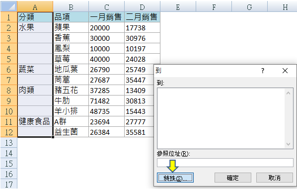

豪拜兒|Excel教學：一秒填滿取消合併儲存格後的空白格！

大家是否遇過取消合併儲存格後，需要一個個的複製貼上將空白格填滿的情況呢？這種情況不僅耗時，而且容易出錯，特別是當你需要處理大量數據時，更是令人頭疼。不用擔心！今天要分享一個可以在一秒鐘內完成填充的方法，利用快捷鍵 Ctrl+G。這個方法既簡單又高效，能大幅提升你的工作效率，讓你輕鬆應對各種數據填充的需求。
使用 Excel 進行數據處理時，經常需要合併和取消合併儲存格。合併儲存格後，取消合併通常會留下許多空白格，這些空白格需要被快速填充，以保持數據的連貫性和完整性。手動填充這些空白格，不僅繁瑣，而且非常容易出錯。然而，利用 Excel 提供的快捷鍵和特殊功能，我們可以在幾個簡單的步驟內，快速完成這些看似繁瑣的工作。
接下來，我們將通過具體的操作步驟，詳細講解如何使用快捷鍵 Ctrl+G 快速填充空白格。希望通過這篇教學文章，能讓你更加熟練地掌握這個實用技巧，從而提升日常工作的效率。讓我們一起來看看這個神奇的方法是如何操作的吧！
高速填充空白格的操作步驟如下：
解除合併儲存格後，出現好多個空白格
當你解除合併的儲存格後，可能會在表格中看到很多空白格。

先將 A 欄選起來
首先，選中需要填充的範圍，例如這裡是 A 欄。

在鍵盤上按 Ctrl+G，選擇特殊
按下 Ctrl+G 開啟特殊對話框。

設選擇空格，確定
在特殊對話框中，選擇空格，然後點擊確定。

此時發現空白格都被選起來了
現在，所有空白格都會被選中。

在第一個空白格輸入公式，此次的範例是等於上一列的品項，故輸入=A2
在第一個空白格輸入你想要填充的公式或數據，例如在這裡我們輸入 =A2，這將從上一列（A2 儲存格）複製數據。

在鍵盤上按 Ctrl+Enter，完成
最後，按下 Ctrl+Enter 鍵，這將把你輸入的公式或數據填充到所有選中的空白格中，快速完成填充操作。

這個方法不僅節省時間，還能確保你的數據整潔和準確性。無論你處理的是一小部分還是大量的空白格，這個技巧都能夠幫助你快速處理。現在就試試看吧！
小結
透過自訂格式和快捷鍵的應用，您能夠迅速建立一個完整的員工資訊表，有效地避免輸入重複的文字，從而節省大量時間並提升工作效率。
心得
為什麼需要學習 Excel？
學習 Excel 不僅能夠提升數據處理和分析能力，還能顯著提高工作效率。無論是進行基本的數據整理，還是進階的數據分析，Excel 都是不可或缺的工具。掌握 Excel，將能夠提升工作效率，通過快捷鍵和自動化功能，減少重複性工作。此外，將增強數據分析能力，使用各種公式和圖表，輕鬆分析和展示數據。熟練掌握 Excel 也能增加就業競爭力，這是許多職位的基本要求，尤其是在財務、數據分析和行政等領域。
系統地學習 Excel
如果想要更系統地學習 Excel，或是希望進一步提升自己的 Excel 技能，可以參考以下學習資源：在 Hahow 平台上，可以找到許多優質的 Excel 課程，推薦以下初級和進階課程，從基礎開始，逐步深入掌握各種實用技巧。
為什麼選擇 Hahow 線上課程平台？
Hahow 是一個受歡迎的線上課程平台，提供各種專業課程。選擇 Hahow，可以享受靈活的學習方式，隨時隨地都可以學習，非常適合忙碌的工作人士。平台上的課程由專業講師授課，內容豐富且實用。還可以與其他學員交流學習心得，共同進步。相比坊間動輒上萬元的課程，Hahow 的線上課程不僅省去交通的舟車勞頓，更有價格實惠的絕對優勢。
不要錯過這個提升自我的機會，立即註冊 Hahow，為職業生涯加分！
-
點擊圖片前往 Hohow，學習更多線上課程